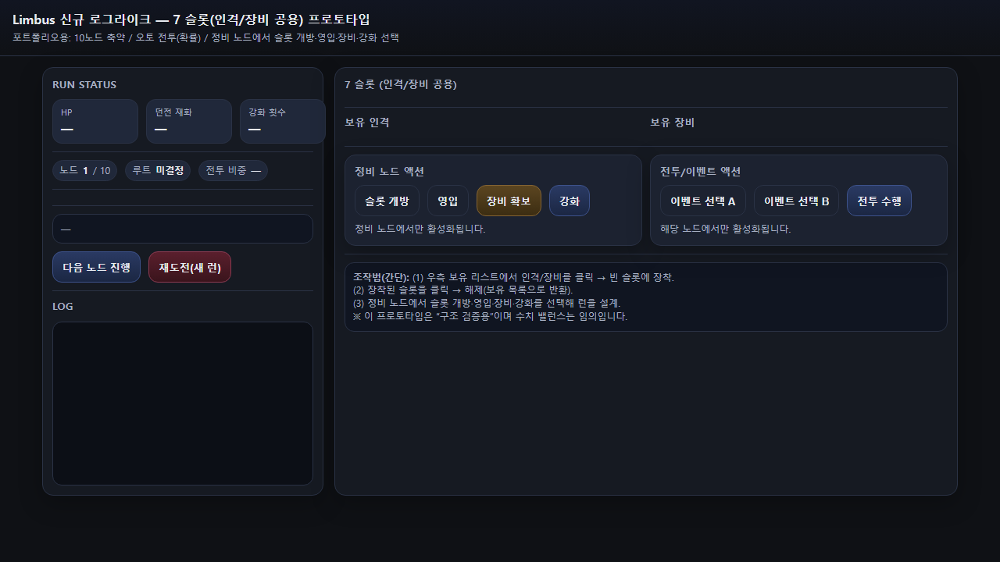
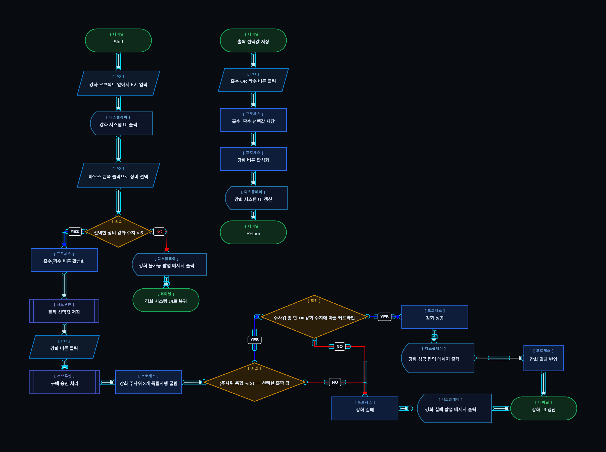
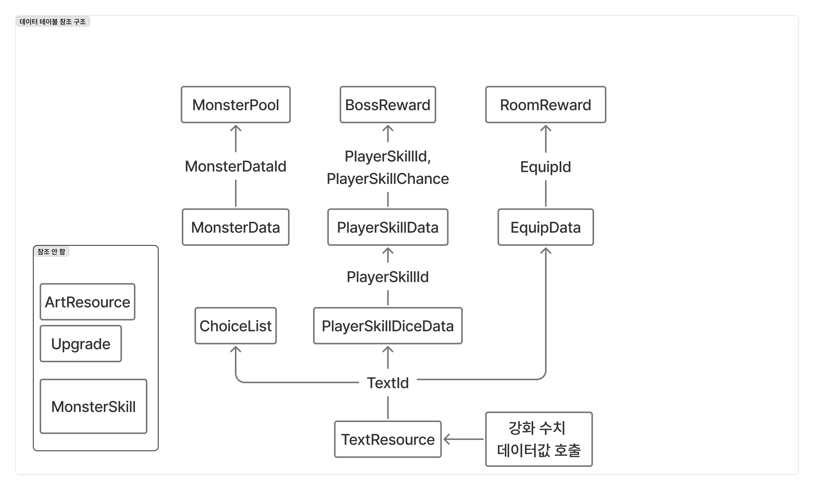

Limbus 재학습 UX 분석
중간층 유저가 전투 규칙, 키워드, 상태 효과를 다시 학습하기 어려운 문제를 잡고 선택형 튜토리얼, 매뉴얼 보상, 전투 중 도움말 흐름으로 정리합니다.
Portfolio
복잡한 RPG 시스템을 화면 상태, 피드백, 재학습 흐름으로 정리하는 UI/UX 사례입니다.

중간층 유저가 전투 규칙, 키워드, 상태 효과를 다시 학습하기 어려운 문제를 잡고 선택형 튜토리얼, 매뉴얼 보상, 전투 중 도움말 흐름으로 정리합니다.
7슬롯 로그라이크 구조에서 유저가 어떤 선택을 반복하는지 확인하고, 영입/장비/강화/전투 정보의 우선순위를 화면 흐름으로 검증합니다.
프로토타입 열기
장비 강화와 상점 UI를 기준으로 버튼 활성/비활성, 팝업 메시지, 성공/실패/취소 상태, QA 체크 기준을 Unity에서 구현 가능한 상태표로 정리합니다.

Project_BB와 Exit Value 사례를 묶어 조건, 예외, 데이터 참조, 선택지 UI가 플레이어의 화면 이해 흐름과 어떻게 연결되는지 설명합니다.